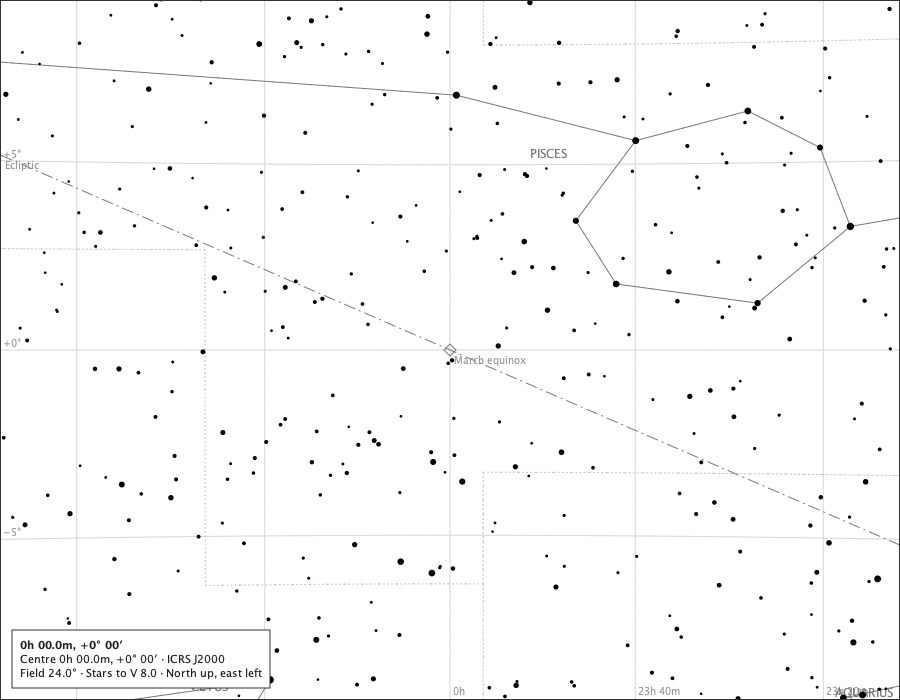

The Ecliptic
Where the year is measured from

- Region
- Pisces
- Field
- 24°
- Ink
- The dash-dot circle and the open diamond are Ecliptic module ink; everything else is the core chart.
- Source
- docs/studies/gallery/ecliptic-equinox.png
- Produced
- Composed by the production chart component with the real ecliptic module and reference-ink painter (GalleryPageMain); regenerated and compared by make evidence-contracts. Sprint 28 tree (d9be561).